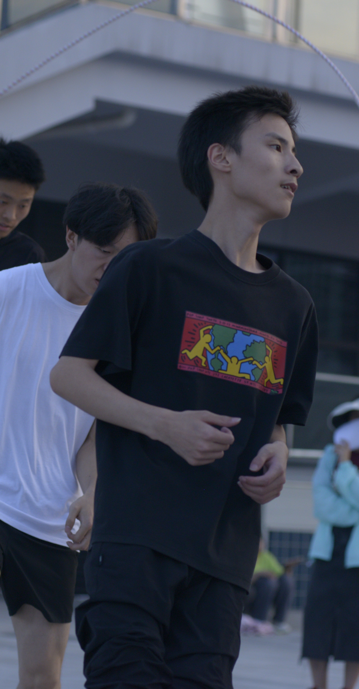

# huangchuanwu.github.io
<!DOCTYPE html>
<html>
	<head>
		<meta charset="utf-8">
		<title>王志龙的个人介绍</title>
		<style>
		body 
		{
			background-image: url(img/背景1.jpg);
			background-size: cover;
		}
		div.transbox
		{
		  width: 1050px;
		  height: 700px;
		  margin: 90px 90px;
		  background-color: #ffffff;
		  border: 1px solid #FFFFFF;
		  opacity:0.8;
		}
		
		h1 {text-align: center;}
		h2.ex1 {margin-left:5cm;}
		h3.ex1 {margin-left:5cm;}
        h4.ex1 {margin-left:3cm;}
		img.ex1{margin-left:5cm;}
		p{text-align: right;}
		p.ex1{margin-right: 2cm;}
		p{color:mediumpurple}
		
		/*cc:change color*/
		a.cc:visited {color:#0000ff;}
		a.cc:hover {color:#ffcc00;}
		</style>
	</head>
	<body>
		<div class="background">
		<div class="transbox">
			
			<h1>个人简介</h1>
			
			<h2 class="ex1">王志龙</h2>
			<h3 class="ex1">学号：2233602047</h3>
			<h3 class="ex1">班级：地信222</h3>
			<h3 class="ex1">专业：测绘地理信息技术</h3>
			<h3 class="ex1">学校：<a class="cc" href="http://www.cqvie.edu.cn/">重庆工程职业技术学院</a></h3>
            <h3 class="ex1">爱好：看书，听歌，赏剧，磕糖</h3>
            <p class="ex1">故事的开头总是这样，恰逢其会，猝不及防......</p>
            <h1>求学经历</h1>
            <h4 class="ex1">初记事时与爷爷奶奶生活在山里，很开心！！！<br>后被父母带去浙江，然后在此学习十四余年<br>
                小学平平无奇，无甚大用；初中开始发奋，但来不及；高中最是好玩，终 到此间<br>
                进入工程一年半，有收获，有失去。一开始加入了校团委组织部，学习并锻炼了半年<br>
                后又加入了测绘学社，成为负责人，所有忙碌就从此开始，校园生活开始完整起来<br> 
                                   
            </h4>
           
			
		</div>
		</div>
		<embed height="80" width="200" src="bgm/背景音乐1.mp3">
	</body>
</html>
